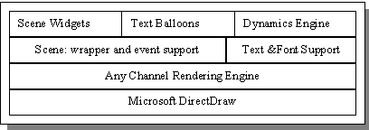
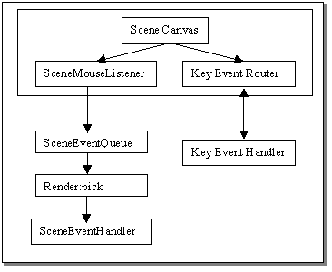

GUI Framework Overview
This page was originally written by Claire.
Last updated: [1998-05-21 Claire]
Introduction
The GUI Framework includes a collection of packages to support the fully graphical 3D user interface with voice chat. These include all of the Presenters needed by the GUI Framework factories and the code libraries to support them.
Related Documents
UI Framework
Console Framework
GUI Framework
Requirements
The GUI Framework once started is responsible for displaying various presenters to users in a graphical display. The GUI Presenters are implementations of those in the standard UI Framework. In addition, the GUI Framework includes the packages and classes necessary to support the actual presenters.
Architecture
Current Architecture Overview

fig 1. Main Window Display Architecture

fig2. Main Window Event Architecture
The GUI Framework packages are built on a third party rendering engine and Netscape's IFC interface library. This represents one possible combination of graphical display technologies. The GUI display can be thought of as two separate collections of packages based on these two separate display mechanisms. First, the main windows display that depends on the framework package as well as scene, font, dynamics and scenewidget. Second, the external windows that are built with IFC and a collection of wrapper and utility classes for customization found in the ec/ tree.
The current cosm gui framework packages are as follows:
- Framework: the GUI implementation of the UI Framework, the UI Framework Factories and the Notification Manager.
- UIPresenter: the GUI implementation of most of the presenters created by the UIPresenterFactory and the SessionUIPresenter factory.
- Windows: some external window presenters including the VoxChat, progress, preferences and log windows.
- Login: support classes including presenter to permit user login, which must occur before the framework is fully in place
- Scene: the wrapper around the AnyChannel renderer and the classes that support the main window's scene canvas. This includes event handling and picking functions.
- Fonts: a wrapper around native font support that allows the display of fonts and stylized text and balloons in the scene canvas.
- Dynamics: the dynamics engine and the presenters used for in-world display of an unum. It handles compositing and animation of objects within the scene. It also handles the scrolling word balloons and the texture cache.
- SceneWidget: a package of classes used to display scene canvas widgets including buttons, labels and menus. They are drawn by the renderer and they receive events from the scene's event queue.
- Texture: the texture presenter.
- Sound: the VoxChat support that is currently used only by the GUI Framework.
- Utils: miscellaneous utility classes
Proposed Architecture Overview
It is unknown at this time how extensive the changes need to be in the current architecture. A few of them have however been decided. More details about specific changes can be found in the subsystem document.
- All windows will be Swing based rather than IFC based. This eliminates all of the stonelook type classes as well as the IFC application. It will require most of the current windows to be rewritten using the Swing class equivalents. Any essential functionality that was part of IFC application will have to be moved to the EC Main class or into the G/UI Framework.
- We will no longer be using VoxChat to support point to point audio sessions. We will be using Net Meeting instead.
- Scene Widgets should only be used for things that must be displayed inside the main scene. This means using standard Swing widgets for the border areas.
- Linear Menu or Popup menu support needs to be completed in the fonts and balloon code.
- Fonts, Texture, Dynamics Engine and Scene Widget will need to be rewritten or rewrapped should we change render engines.
- Login needs to be simplified and duplicate code should be removed and moved into a utility class.
- The main Framework package needs to be reorganized to better manage the multiplicity of functions that have been added to GUIFramework class and to prevent such confusion in the future.
- The Notification Manager support needs to be cleaned up. The need to make the notification objects stewards made them overly complex.
Off the shelf alternatives
For the main window: dependent on render technology
For the external window: AWT, Swing and MFC
For audio: Net Meeting
Other Design Objectives, Constraints and Assumptions
Current implementation
Current directory for GUI packages: src\cosm1\ui\gui\
Current packages:
- ec.cosm.gui.framework
- ec.cosm.gui.fonts
- ec.cosm.gui.login
- ec.cosm.gui.scene.
- ec.cosm.gui.scenewidget
- ec.cosm.gui.texture
- ec.cosm.gui.appearance
- ec.cosm.gui.uipresenter
- ec.cosm.gui.window
Current directory for VoxChat :src\cosm1\ui\sound
Examples
Testing and Debugging
Design Issues
Resolved Issues
Open Issues